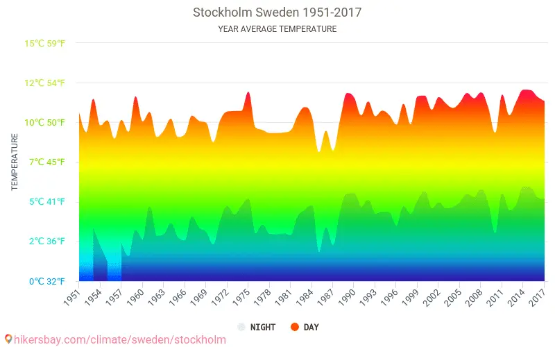

Weather in Sweden
Winter and summer temperature differences in Sweden are extreme,
but generally the country enjoys a temperate climate, thanks to the Gulf Stream.
Above the Arctic Circle, winter is severe with temperatures going below -30°C,
while summer temperatures here, and in the rest of the country,
regularly hit +20°C.
Sweden's regions and their differences in climate
You can divide the country into three regions; central and southern Sweden, the northeast,
and the northwest, or far north to describe the weather in Sweden.
In central and southern Sweden the winters are short and quite cold, and summer temperatures
are similar to those in southern England, but with a lot more hours of sunshine and daylight.
In the northeast meanwhile, the winters are severe, the more so as you travel further north,
while the summers can be surprisingly warm.
In the far north, the winters are also severe, with snow lying year-round on elevated areas,
and the summers are short and changeable. Because Sweden lies at a high latitude much of the
country has very long hours of daylight in summer and very long nights in winter.
So, no Polar bears we’re afraid, just the wonderful Swedish weather and all the fantastic things you can do in it.
Current weather in Sweden
More information can be found at the site timeanddate.com or at SMHI - weather in Sweden.
